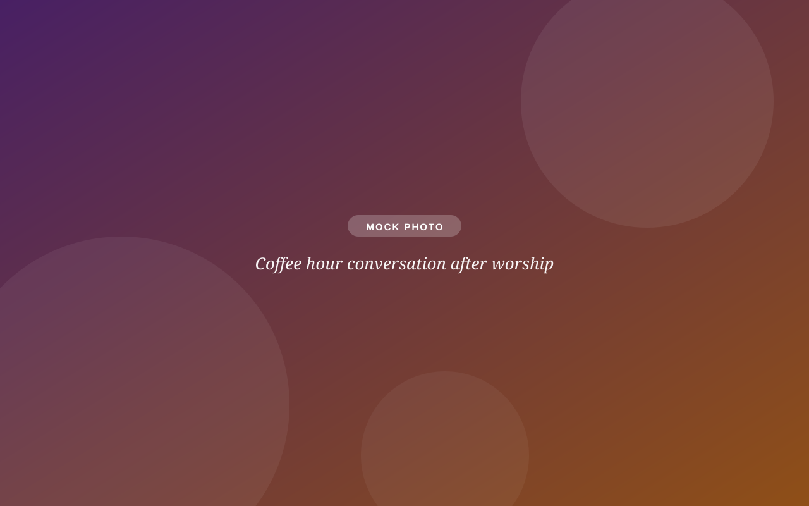
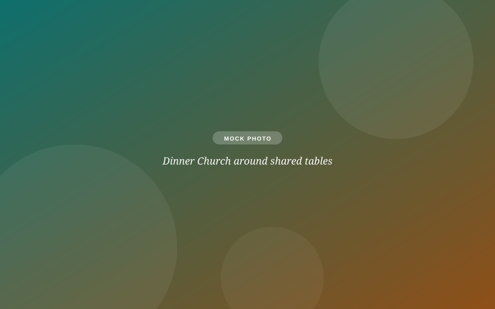

Word on Wednesday
Pastor-led Bible study on the coming Sunday's text. Wednesdays at 10 AM, coffee at 9:30. The liveliest hour of the week.
Groups & care
Church gets real in the small rooms: over coffee, around a book, in a study, at a breakfast table. Every group below is open to newcomers, every week, no audition required.

Groups for adults
Pastor-led Bible study on the coming Sunday's text. Wednesdays at 10 AM, coffee at 9:30. The liveliest hour of the week.
Fiction with heart, discussed after worship on selected Sundays at 11. Recent picks include Tom Lake and The Unlikely Pilgrimage of Harold Fry.
First Sundays (resuming fall): aging, grief, transitions, intercultural understanding, and current events, with speakers and honest Q&A.
Saturday breakfasts and Wednesday morning coffee at 9. Low-key fellowship that's been known to solve most of the world's problems by 10.
Saturday breakfasts a few times a year with a speaker and good company, plus service projects through the seasons.
2nd & 4th Sundays at 10:30: parents talking honestly about the actual job of parenting, with childcare provided.
Tables, not pews
Some of the best connecting at SOTH happens midweek: Dinner Church on third Wednesdays during the school year, and Campfire Worship every summer Wednesday. Show up once and you'll have people to sit with on Sunday.

Care ministries
Care isn't a department here. It's a promise. These are the ways we keep it.
Monthly visits, with communion, to members who are homebound, hospitalized, or in care facilities. Out of sight never means out of mind.
When a family is grieving, this team handles hospitality and logistics for services and receptions, so the family can just be the family.
Through our partnership with Mental Health Connect, free navigation help for mental-health resources. No diagnosis, membership, or explanation required.
A prayer request, a hospital visit, a hard conversation: reach Pastor Yolanda directly at pastoryolanda@sothchurch.com or call the office.
Don't wait for Sunday. Call the office and a real person will connect you with the right help.
Coffee hour, Sundays at 10:30. Tell anyone you're new and they'll introduce you around. Or send a note and we'll make the first connection for you.